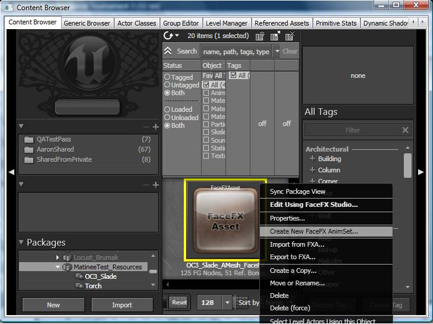
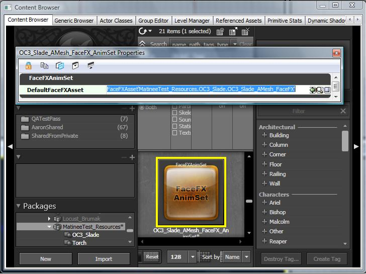
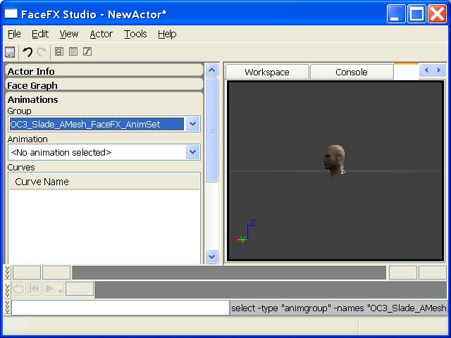
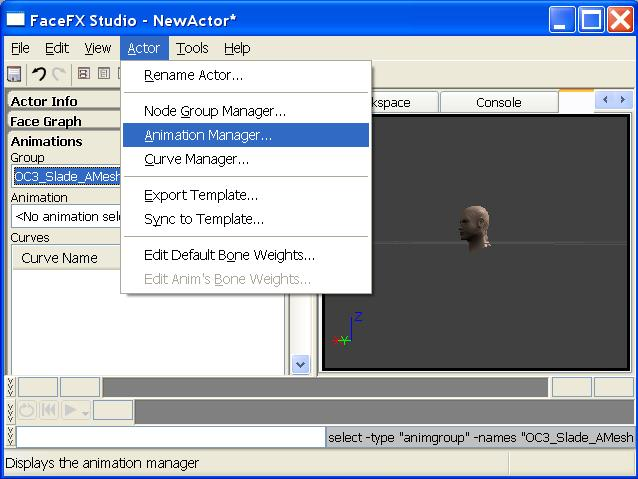
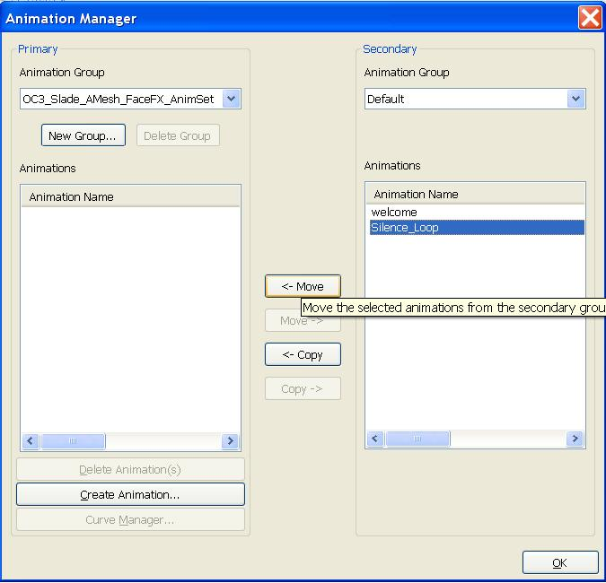
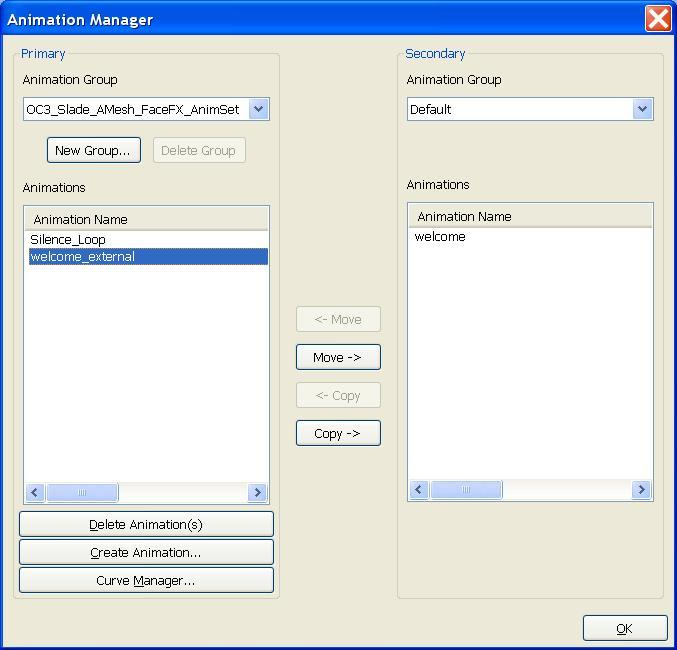

FaceFX External Animation Sets
Overview
FaceFX animation data is stored as curve names and keys. As long as an actor has nodes in its Face Graph that match the animation curve names, the character can play the animation. Animations can therefore be shared across multiple actors and loaded dynamically in game. Exported Animation Sets give developers an interface to do this. This document describes how to create and use External Animation Sets in UE3. It does not describe the interface for loading and unloading External Animation Sets in your game, only the interface for creating and modifying External Animation Sets in FaceFx Studio.
Creating an External Animation Set
The first step is to create an External Animation Set. To do this, right-click on an existing FaceFX Asset and select Create New FaceFX AnimSet...
OC3_Slade FaceFX asset can be found in \UTGame\Content\TestPackages\MatineeTest_Resources.upk

From the pop-up dialog, enter the Package and Group information and give the External Animation Set a name. Hit OK. To see the new Animset, you may have to do a full refresh of the Content Browser (Ctrl+F5).
The External Animation Set is now attached to the FaceFX Asset that was used to create it. Although it can be associated with any FaceFX Asset, the External Animation Set needs a default FaceFX Asset so it knows what character to open. You can change the default FaceFX Asset by right-clicking on the newly created External Animation Set, and selecting Properties.

Opening an External Animation Set in FaceFX Studio
Double-click on the External Animation Set or right-click on it and select FaceFX Studio to open the External Animation Set in FaceFX Studio. The default FaceFX Asset stored in the Properties of the External Animation Set is loaded, and the External Animation Set is mounted to the actor.

Notice that the External Animation Set in the screenshot above appears to be an animation group. From the user's perspective there are no visual differences between a mounted External Animation Set and an animation group. Internally however, an animation group is stored within a FaceFX Asset, and an External Animation Sets is stored elsewhere in an Unreal package.
You can only work with one External Animation Set at a time from UnrealEd. In game however, you can mount multiple External Animation Sets to a single FaceFX Asset dynamically.
Adding Animations to an External Animation Set
Initially, the newly created External Animation Set will not contain any animations. You can transfer animations into the External Animation Set or generate new animations from the Animation Manager. Select Animation Manager... from the Actor menu in FaceFX Studio.

From the Animation Manager, select the External Animation Set from the animation group dropdown on the left. In the below screenshot, the Silence_Loop animation in the Default group is transferred into the External Animation Set by clicking on the button with two arrows pointing left.

You can also generate new animations from sound cues by clicking on the Create Animation... button and following the Create Animation Wizard. Make sure the External Animation Set is selected as the Primary Animation Group at the top-left of the Animation Manager dialog. In the below screenshot, the "welcome_external" animation has been added to the External Animation Set by analyzing the "welcome" sound cue stored in the MatineeTest_Resources package.

Saving an External Animation Set
To save the External Animation Set, simply perform a save operation from FaceFX Studio. This will save changes to both the FaceFX Asset and the External Animation Set. Even though the External Animation Set appears to be part of the FaceFX Asset, when it is saved it will be saved separately. Saving will mark the appropriate Unreal packages as dirty and you will have to save the Unreal packages to fully commit your changes.
Important!
You are viewing documentation for the Unreal Development Kit (UDK).
If you are looking for the Unreal Engine 4 documentation, please visit the Unreal Engine 4 Documentation site.